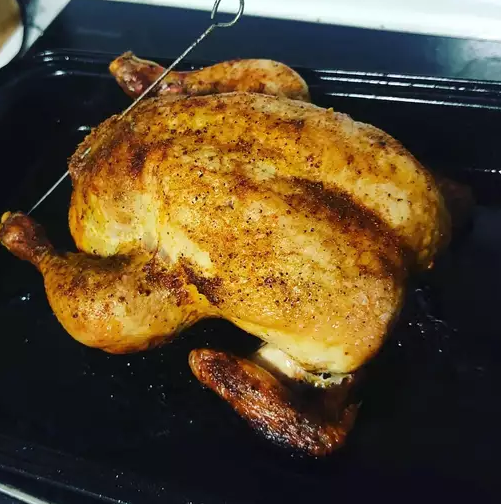

Roasted Chicken

If you want a juicy roasted chicken this recipe is for you. Perfect
for beginner and pros alike.
Ingredients
- 1 (3 pound) whole chicken, giblets removed
- salt and black pepper to taste
- 1 tablespoon onion powder, or to taste
- ½ cup butter or margarine
- 1 stalk celery, leaves removed
Steps
- Preheat the oven to 350 degrees F (175 degrees C).
- Place chicken in a roasting pan; season generously inside and out with onion
powder, salt, and pepper. Place 3 tablespoons of butter in chicken cavity; arrange
dollops of remaining butter on the outside of chicken. Cut celery into 3 or 4 pieces;
place in the chicken cavity.
- Bake chicken uncovered in the preheated oven until no longer pink at the bone and the
juices run clear, about 1 hour and 15 minutes. An instant-read thermometer inserted into
the thickest part of the thigh, near the bone, should read 165 degrees F (74 degrees C).
- Remove from the oven and baste with drippings. Cover with aluminum foil and allow to rest for
about 30 minutes before serving.
- Enjoy!
Tips
You know the chicken is done when the meat is no longer pink at the bone and the juices run clear.
> Back to more recipes